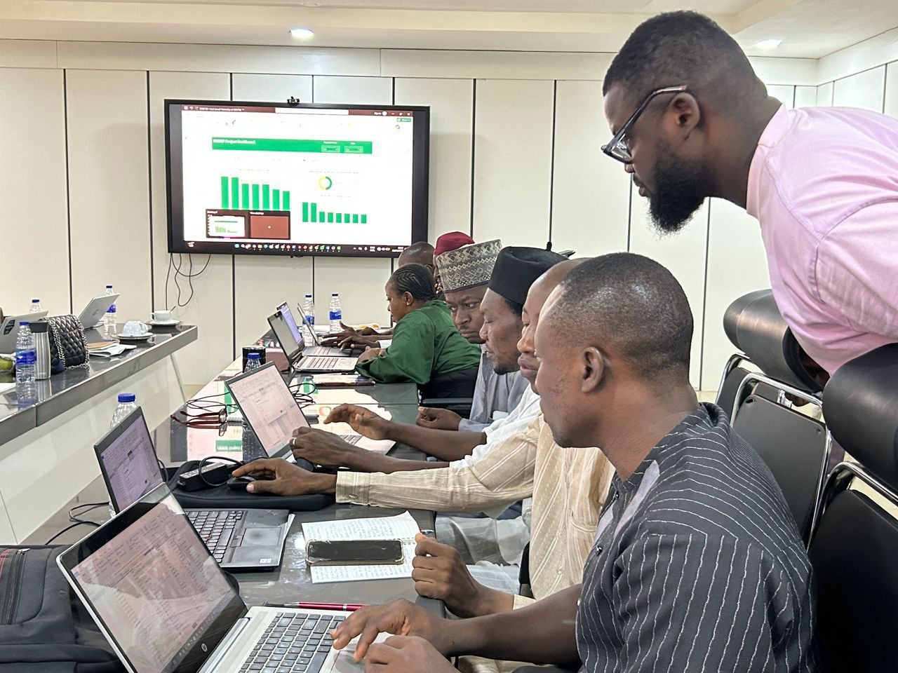
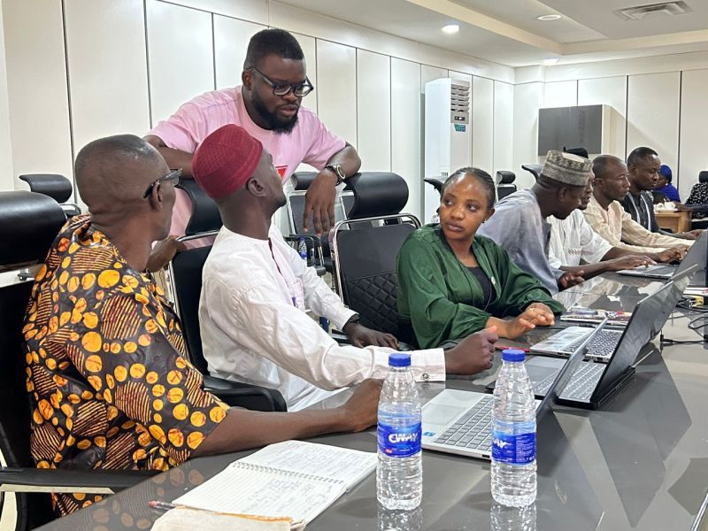
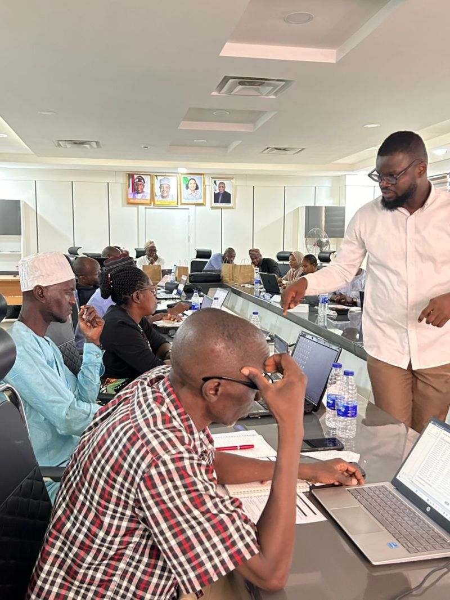

Data training & facilitation
I facilitate and conduct data trainings — from one-on-one tutoring to a hands-on Power BI workshop for Nigeria's Federal Ministry of Budget and Economic Planning, in collaboration with UNFPA — helping people get genuinely comfortable working with their own data, not just clicking through a tool once and forgetting it.
What I teach
Excel
From spreadsheet fundamentals to formulas, pivot tables, and building reports that don't fall apart the moment the data changes.
Power BI
Data modeling, DAX measures, and dashboard design — building reports people actually open, not just export once.
SQL
Querying, joins, and cleaning real-world messy data — the parts most tutorials skip past.
Data literacy
Reading and interpreting data correctly — spotting a misleading chart or a shaky conclusion before it drives a bad decision.
Power BI Workshop for FMBEP, with UNFPA
The question that set the tone
We opened on a Monday morning with a simple question: if 1 million Nigerian children received nutrition support last year, is that enough information on its own to make a policy decision? The room went quiet — and that set the tone for one of the most energising training engagements I've been part of.
Co-facilitated with Ayoola Arowolo, this hands-on Power BI workshop for Federal Ministry of Budget and Economic Planning (FMBEP) staff, run in collaboration with UNFPA, started from a premise I genuinely believe in: aggregate numbers can hide exactly the people a budget is supposed to reach.
What we covered
- Equity vs. equality — why a national average of 80% programme coverage can quietly mask three states sitting at 20%.
- Why disaggregated data, by sex, age, and geography, isn't just a technical requirement but a moral one.
- Cleaning messy, real-world datasets inside Power BI.
- Building relationships between tables and writing DAX measures.
- Producing dashboards built to answer one question: who is this money actually reaching?
"Aggregate data lies — not because it's wrong, but because it hides who's being left behind."
The shift
By the end of the training, ministry staff who had never opened Power BI before were cleaning their own datasets and building dashboards. One participant pointed at their screen and said: "So Lagos has this budget but only this many female beneficiaries — that's a problem." That's not just a training outcome. That's a mindset shift — data literacy in the hands of the people who actually control the budget.



Who it's for
- Individuals building toward a data/business analytics career and wanting hands-on, practical guidance rather than another course they won't finish.
- Teams that need to self-serve their own reporting instead of routing every request through one analyst.
- Small businesses that already have the data but not the skills to get much out of it yet.
Format
- One-on-one tutoring sessions, tailored to what you're actually trying to get done.
- Small-group or team sessions, on request.
- Remote-friendly — based in Abuja, Nigeria, and used to working with people anywhere.
Want to level up your (or your team's) data skills?
Tell me what tool and what level you're starting from, and what you're hoping to be able to do afterward.